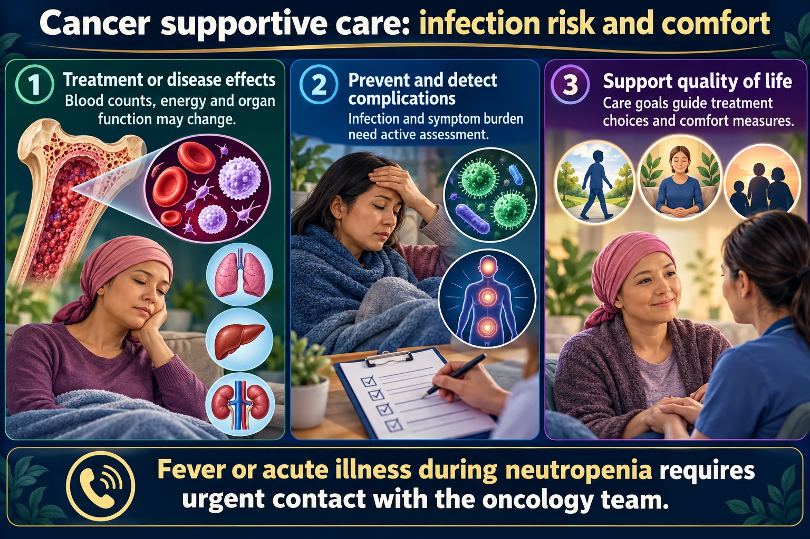

Protecting a patient who cannot protect themselves, and caring well when cure is no longer the goal.

Below 500 she cannot make pus, redness or swelling - so a single temperature is the only sign left, and it is an emergency.
Fever or acute illness during neutropenia requires urgent contact with the oncology team.
Treatment or disease effects
Blood counts, energy and organ function may change.
Prevent and detect complications
Infection and symptom burden need active assessment.
Support quality of life
Care goals guide treatment choices and comfort measures.
Neutropenia
A reduced neutrophil count can blunt infection signs; follow the oncology fever plan.
Infection prevention
Hand hygiene, line care and avoiding infectious exposure are central.
Palliative care
Can accompany disease-directed treatment and addresses symptoms, communication and family needs.
ANC < 500 Severe neutropenia. Below this the patient cannot mount a normal inflammatory response, so the usual signs of infection — pus, redness, swelling — may be absent entirely.
A single temperature of 38C / 100.4F in a neutropenic patient is a medical emergency. Cultures and IV antibiotics within the hour.
Nadir — the lowest point — is usually 7–10 days after a chemotherapy dose. That is the highest-risk window, and it is when teaching must have already happened.
| Palliative care | Hospice | |
|---|---|---|
| When | Any time, from diagnosis | Prognosis usually 6 months or less |
| Alongside treatment? | Yes — curative treatment continues | Curative treatment has stopped |
| Goal | Comfort, dignity, quality of life | |
Palliative care is not giving up, and it does not require stopping treatment. That misconception is the point of many questions.
There is no maximum opioid dose when titrating to comfort. Doses that would be unsafe in other contexts are appropriate here.
Fear of respiratory depression is not a reason to under-treat a dying patient's pain. Relieving suffering is the goal of care.
Give analgesia around the clock, not only on request — steady levels control pain far better than chasing it.
The best response almost always stays, listens and reflects rather than reassuring, redirecting or explaining.
| Do | Do not |
|---|---|
| “Tell me more about that.” | “Everything will be fine.” |
| Sit down. Allow silence. | Change the subject |
| “This sounds frightening.” | “Don’t think like that.” |
| Ask what matters most to them | Speak only to the family |